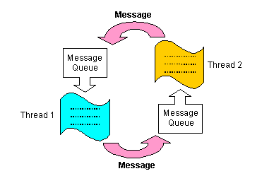
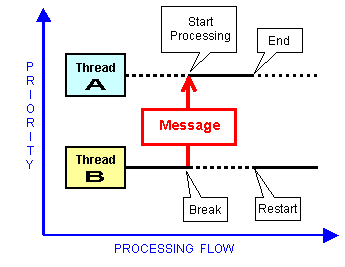
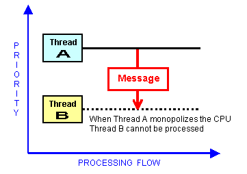

Threads send and receive messages to transfer information, to ensure synchronization, or to control thread execution and processor sharing. Messages are used to transfer control of the processor to higher priority threads. To do this, a message is sent that switches the state of the higher priority thread to the execution state, and a message is sent that switches the state of the currently running, lower-priority thread to the ready condition. Messages are also sent to and received by threads to synchronize processes.
There are many ways to use messages. Their use is limited only by the imagination of the game developer.
The following are just examples. Other kinds of messages may also be invented and used by the game developer.
Whereas a typical C program might provide these kinds of processes during an interruption, in the N64, the N64 operating system takes care of them by sending messages.
Messages are used to ensure thread synchronization and communication as shown in the following illustration:

Following are the methods used to send and receive messages. How you use these methods will depend on your game application design.
Sending MethodReceiving Method
Thread execution order depends on thread priority and the message sending method. Therefore you need to be careful to handle priority differences between a sending thread and a receiving thread. If Thread B, executing a process, sends a message to Thread A which has a higher priority than Thread B, processing moves to Thread A, and Thread B is suspended until Thread A's process finishes. However, for this to work, Thread A must be in the "queued state" waiting for the message from Thread B so that processing can instantly move to Thread A as soon as it gets the message. The following illustration shows how this works:

Also, be particularly careful when a high-priority Thread A sends a message to a lower-priority Thread B to get a result that Thread A needs to continue its process. If Thread A monopolizes the process, Thread B won't be able to run anything as the following illustration shows:

To switch from one thread to another, always have the current thread yield the CPU by entering the "queued state" to wait for a reply. Then execution can move to another thread.
Nintendo® Confidential
Copyright © 1999
Nintendo of America Inc. All Rights Reserved
Nintendo and N64 are registered trademarks of Nintendo
Last Updated March, 1999